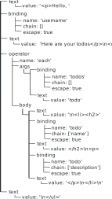

Splice: An HTML templating language
Table of Contents
Overview
Splice supports nesting, partial templates, iterators, conditionals, variable assignment, local scope, comments, escape characters, and escapes HTML by default. In its minified form, it is only 3.06 KB uncompressed, and has no dependencies.
I've written extensively about how to use Splice, and that writing is available on the documentation website. I will use this space to talk about the implementation of the language, design process/choices, challenges, and open issues.
Abstract Syntax Tree (AST)
The AST for Splice begins not with a single root node, but with a collection of its children - the root node is imaginary. There are three types of nodes in the AST:
- text
- binding
- operator
Text nodes and binding nodes are leaf nodes, whereas operator nodes have a body property which is a subtree. (I think of the body as just a special kind of argument that always comes last). For example, the AST for the following splice template:
<p>Hello, (: username :)! Here are your todos:</p> <ul> (:~ each todos as 'todo { <li> <h2>(: todo.name :)</h2> <p>(: todo.description :)</p> </li> }:) </ul>
would look something like this:

Figure 1: An example Splice AST
Lexer & Parser
The lexer and parser work together to turn the former template into the latter AST. The job of a lexer is to split up the text of a program into relevant tokens, and the job of a parser is to create the AST from those tokens. In my program, these roles are intertwined- tokens are parsed as soon as they are identified. My lexing/parsing function takes the template and returns an AST. Within, it runs a loop which invokes a function that identifies a single token, parses it, and returns the remaining template.
// parse :: String -> Array{Object} function parse(template) { const ast = []; while (template) { template = parseToken(template, ast); } return ast; }
When an operator body token is identified, the parser simply creates an AST from the operator body token by recursively invoking the main lexing/parsing function. The recursive nature of the lexer/parser reflects the recursive nature of the syntax tree- operator bodies are subtrees.
// parseFunction :: String -> Array{String, Object} function parseFunction(template) { //... code omitted for brevity [ token, bodyAST ] = parseBody(template); //... const expr = { type: 'op', name: op, args: args, body: bodyAST, }; //... } // parseBody :: String -> Array{String, Array{Object}} function parseBody(template) { //... return [resultToken, parse(body)]; }
Generator
Now the hard work is done! All thats left is to turn the tree into text again. A reminder, when someone uses the compiler, they pass an object with the data to be filled into the template. That object can be thought of as the global scope for the Splice program. The job of the generator is to use the scope and the AST to render the final text output.
The generator has knowledge of the three node types. For operator nodes, it must return the result of invoking the associated function, as all valid operators in the language have an internal function associated with them.
Valid bindings refer to some property of the scope object, so all generator has to do is look up that property for a given binding node and return it. And of course, for text nodes, just return text!
// evaluateAll :: Array, Object -> String function evaluateAll(ast, scope) { return ast.reduce((html, expr) => html + evaluate(expr, scope), ""); } // evaluate :: Object, Object -> String function evaluate(expr, scope) { switch (expr.type) { case "op": return templateFns[expr.name](scope, ...expr.args, expr.body); case "binding": let value = expr.chain.reduce((data, prop) => data[prop], scope[expr.name]); if (typeof value == 'string') { return expr.escape ? escapeHTML(value) : value; } return value; case 'text': return escapeChars(expr.value); } }
My Process
My original design for the syntax didn't stick. It looked like this:
<<~ each madlibs >> <p>The << $.adjective >> << $.noun >> << $.verb >></p> << end >>
I got as far as making a prototype documentation site but decided I didn't love the amount of angle brackets. It wasn't much trouble to change the syntax, but even so, it goes to show that it's worthwhile to make sure you're solving the right problem before you start coding.
For the implementation, I started by hardcoding a prototype AST as well as a test 'scope'- a set of data with which to test the compiler. Then I went on to writing the generator of the language. I think this was wise because it allowed me to easily modify the AST to suit the needs of the generator when I discovered something needed to change, without having to rewrite components of the parser.
Challenges
After creating the documentation website using Splice and thinking that it was good to go, I ventured to try opening the website in Safari, and lo and behold, the site crashed immediately. I learned the hard way that not all browsers support look-behinds in regular expressions, because I had 49 of them in my Splice compiler.
The need for these look-behinds in my regular expressions was to avoid my escape character: \. This meant that I had to replace much of the logic for tokenization without the benefit of regular expressions. On the bright side, I think the readability of my code has benefited significantly from this change.
To do this, I wrote a helper function to do most of the heavy lifting:
// strTok :: String, String -> String, String function strTok(text, endChars, chop = false) { let i = 0; let j = endChars.length; while (j <= text.length) { if (text.slice(i, j) == endChars && text.slice(i-1, j) != '\\' + endChars) { if (chop) { return [text.slice(0, i), text.slice(i + endChars.length)]; } else { return [text.slice(0, i), text.slice(i)]; } } i++; j++; } return [text, '']; }
To get a token and the remaining template it can be used like this:
[ token, template ] = strTok(template, '(:');
Open issues
It would be good to enable pre-compilation of the templates to enable faster performance. My idea is to have an executable that will parse the template(s) within an html file and compile the syntax tree into javascript code, and then write it to a file. The resulting js file would contain a function which contains the syntax tree written as object/array/string literals. That way there is no parsing client-side, only compilation to html.
Some other things to work on:
- improving the error messages for the language
- writing more extensive tests
- enabling a user to register a helper function
- enable syntax highlighting for the atom text editor